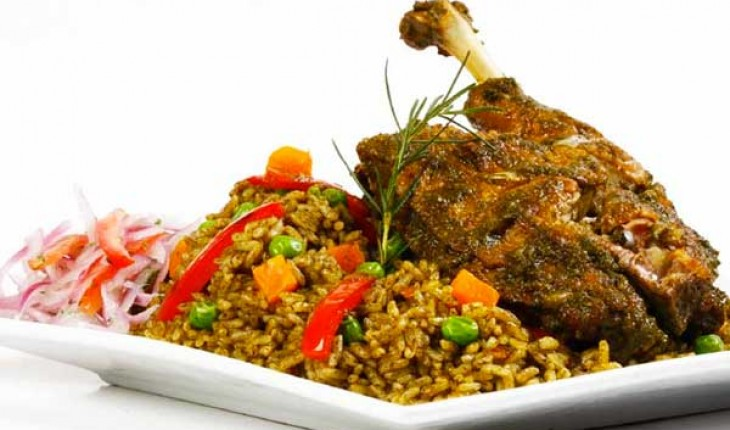

El Arroz con Pato es un plato típico del norte del Perú y tiene un sabor
delicioso gracias al culantro (cilantro) y a la Chicha de Jora.

Tiempo de preparación: 20 minutos
Tiempo de cocción: 1 hora
Total: 80 minutos
Comensales: 4 personas
Ingredientes
4 piezas de pato, pueden ser muslos, pechos, lo que prefieras.
2 atados de culantro (cilantro) licuado en una taza de agua.
2 cebollas rojas medianas cortadas en cuadritos.
4 dientes grandes de ajo molido.
1/2 taza de Chicha de Jora.
1 taza mezclada de alverjas (guisantes), zanahoria en cuadros y choclo (maíz).
1 cerveza negra (1 taza).
1 pimiento rojo.
3 tazas de arroz.
1 cucharada de ají amarillo licuado.
1 cucharada de ají panca/colorado licuado.
Sal, pimienta y comino.
Instrucciones
Primero limpia muy bien las presas de pato fijándote en no dejar ninguna
pluma, lávalas y sécalas. A continuación condimenta las presas con sal,
pimienta, comino por todas partes.
Luego calienta una sartén con aceite y fríe las presas a fuego medio hasta
que cojan un color dorado, no es necesario freírlas totalmente porque luego
se cocinarán junto con el arroz. Cuando hayas terminado resérvalas en algún
recipiente.
Ahora en la olla donde vas a preparar el arroz echa el aceite sobrante con el
que has frito el pato, en caso de que esté quemado, utiliza aceite nuevo.
Caliente la olla con el aceite, echa las cebollas picadas, el ajo molido, el
ají amarillo, el ají panca y fríe por unos minutos. Cuando esté casi frito
todo agrega el culantro licuado, fríe por unos 3 minutos más o menos y si
hace falta échale un poco de agua para que no se pegue o queme.
Cuando esté el culantro frito agrega las presas de pato, la cerveza negra y
la Chicha de Jora (si no tienes puedes agregarle el jugo de medio limón) y
medio cubo de pollo Maggi (opcional), mueve todo y déjalo por 10 minutos más
o menos para que evapore el alcohol y se impregne el sabor en la carne.
Ahora agrega la cantidad de tazas de agua que necesites hasta completar 5
tazas (casi el doble de las tazas de arroz que echaremos más tarde), debes
tener en cuenta la cantidad de líquido que has echado antes (cerveza, Chicha
de Jora y agua). Corrige la sal si hace falta y deja cocinar más o menos 45
minutos porque el pato necesita más tiempo que otras aves para que su carne
se suavice.
Reserva las presas en un recipiente cubierto para conservar su calor y agrega
a la preparación el choclo (maíz), las alverjas, la zanahoria, corrige la sal
y agrega las 3 tazas de arroz. Si es necesario corrige también la cantidad de
líquido, el agua debe estar un dedo por encima del arroz y cocina a fuego
medio moviendo de rato en rato para que no se queme pero con delicadeza para
no romper el arroz.
Después de unos minutos el arroz habrá absorbido casi toda el agua, mueve un
poco para que no se pegue, agrega los pimientos, baja el fuego y déjalo
cocinar por 25 o 30 minutos más hasta que el arroz esté listo. El tiempo
depende del tipo de olla y la cantidad de arroz, lo más importante es que no
se queme ni se pegue en el fondo.
Coloca las presas de pato encima del arroz y tápalo por 3 o 5 minutos para
que coja un poco de calor, aroma y listo 🙂.